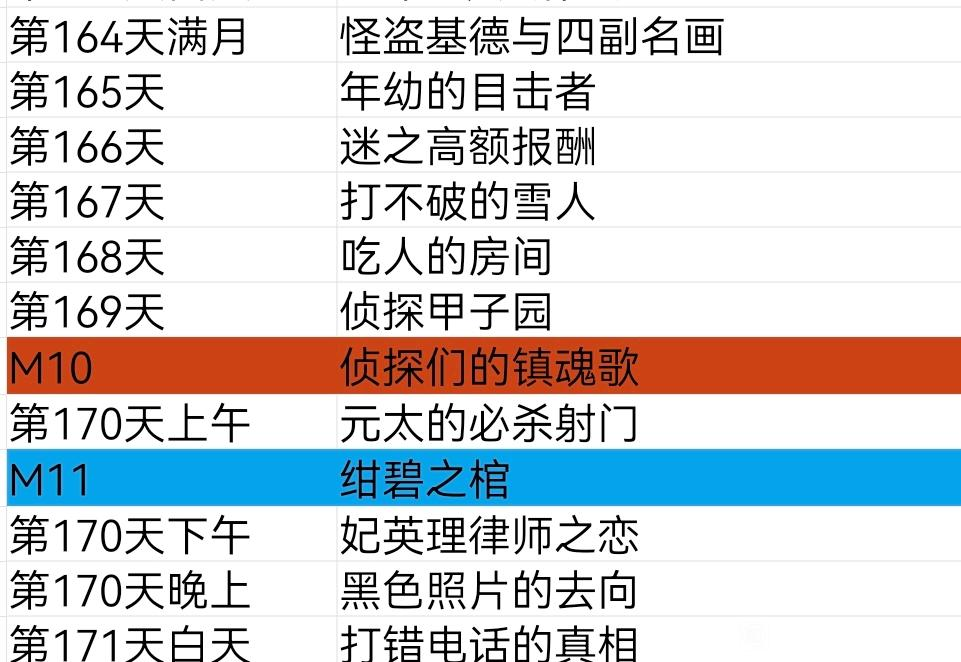

本篇纯属发散思维。
众所周知，【早期剧场版不进入正史】，青山也明确表示“剧场版是剧场版，漫画是漫画”，但是这个【早期】，有多早呢？M11和M12，算早期剧场版还是中期剧场版？争论得就比较多了。
同时，【进入正史】是否意味着其中所有剧情都成立？【不进入正史】是否意味着所有剧情都不成立？这仍然是值得讨论的问题。
要想获得这些问题的答案，就有必要从时间的角度出发，探讨的思路如下：
1、【假设剧场版进入了正史，它最有可能存在的位置是哪里？】
2、【在这个最好的位置，剧场版是否仍有无法忽视的bug？】
需要注意的是，剧场版时而和动画联动，时而和漫画联动，但一般而言一部剧场版只会出现一种联动，其联动的剧情往往就是【剧场版在时间线上最可能存在的位置】，具体为哪种联动则需要独立思考。
一共26部剧场版，其中恰好13部偏向新兰，13部偏向柯哀（不论是否塑造出色），下面我们按【时间】顺序逐一分析。
众所周知，【早期剧场版不进入正史】，青山也明确表示“剧场版是剧场版，漫画是漫画”，但是这个【早期】，有多早呢？M11和M12，算早期剧场版还是中期剧场版？争论得就比较多了。
同时，【进入正史】是否意味着其中所有剧情都成立？【不进入正史】是否意味着所有剧情都不成立？这仍然是值得讨论的问题。
要想获得这些问题的答案，就有必要从时间的角度出发，探讨的思路如下：
1、【假设剧场版进入了正史，它最有可能存在的位置是哪里？】
2、【在这个最好的位置，剧场版是否仍有无法忽视的bug？】
需要注意的是，剧场版时而和动画联动，时而和漫画联动，但一般而言一部剧场版只会出现一种联动，其联动的剧情往往就是【剧场版在时间线上最可能存在的位置】，具体为哪种联动则需要独立思考。
一共26部剧场版，其中恰好13部偏向新兰，13部偏向柯哀（不论是否塑造出色），下面我们按【时间】顺序逐一分析。
首先是M1和M2，按照【假设性原则】，M2还要发生在M1之前。
M1的同期动画是雾天狗（日常），但漫画是滑雪别墅，与M1剧情一致，滑雪别墅柯南指挥小兰破案，M1指挥小兰拆炸弹。
但是，M1的小兰表现比漫画好太多了，滑雪别墅小兰破案时毫无自己的思考，而剧场版小兰确实颇具勇气。两种小兰自然要以漫画为准，因此M1不可能进入正史。
【此外，M1的小兰当听到新一的不能同生就同死时，直接接受了这个现状，这是非常雷的，但还挺符合小兰的人物形象，毕竟小兰还有拉窗帘这种行为】
【M1小兰还向森谷帝二透露了大量情报，与漫画小兰人设完全一致，同样地将柯南丢给父亲照顾，新一的生日也进入了正史，并表示柯南忘记了生日】
M2的同期漫画里小哀已经出场，因此它是与动画联动的，动画为落英缤纷的质问，小兰对父母关系的不理解到有点理解，与她对柯南隐瞒身份的不理解到有点理解相对应。
M2的毛妃关系应该是进入正史的，小五郎的确因为枪击人质丢了工作，英理做菜也确实不好吃，但小五郎恐高的设定只存在于剧场版中。
M2的柯兰水下呼吸完全不符合实际，各种被车卡住之类的剧情十分尴尬，并且【此时小兰知道柯南是新一，就不太愿意去吻了】
两部剧场版同时还有白鸟的问题，漫画白鸟要在小哀登场后登场，因此完全封印了M1和M2的正史可能。
M1的同期动画是雾天狗（日常），但漫画是滑雪别墅，与M1剧情一致，滑雪别墅柯南指挥小兰破案，M1指挥小兰拆炸弹。
但是，M1的小兰表现比漫画好太多了，滑雪别墅小兰破案时毫无自己的思考，而剧场版小兰确实颇具勇气。两种小兰自然要以漫画为准，因此M1不可能进入正史。
【此外，M1的小兰当听到新一的不能同生就同死时，直接接受了这个现状，这是非常雷的，但还挺符合小兰的人物形象，毕竟小兰还有拉窗帘这种行为】
【M1小兰还向森谷帝二透露了大量情报，与漫画小兰人设完全一致，同样地将柯南丢给父亲照顾，新一的生日也进入了正史，并表示柯南忘记了生日】
M2的同期漫画里小哀已经出场，因此它是与动画联动的，动画为落英缤纷的质问，小兰对父母关系的不理解到有点理解，与她对柯南隐瞒身份的不理解到有点理解相对应。
M2的毛妃关系应该是进入正史的，小五郎的确因为枪击人质丢了工作，英理做菜也确实不好吃，但小五郎恐高的设定只存在于剧场版中。
M2的柯兰水下呼吸完全不符合实际，各种被车卡住之类的剧情十分尴尬，并且【此时小兰知道柯南是新一，就不太愿意去吻了】
两部剧场版同时还有白鸟的问题，漫画白鸟要在小哀登场后登场，因此完全封印了M1和M2的正史可能。
M3 世纪末的魔术师
这个位置是固定的，在漫画中也有所提及。
从最新漫画看，基德的确站在通天阁上，但偷的宝石显然不是什么沙皇宝石，于是M3整段剧情都不能存在。
但是，M3的柯哀倒非常符合原著，小哀虽然对基德不感兴趣，但经常故意夸基德以看到柯南跃跃欲试的样子。
小兰形成手电筒名场面，M4还要再来一次，不愧是小兰，之后在新出家，小兰也是通过手电筒找到新出的。（抱住）
这个位置是固定的，在漫画中也有所提及。
从最新漫画看，基德的确站在通天阁上，但偷的宝石显然不是什么沙皇宝石，于是M3整段剧情都不能存在。
但是，M3的柯哀倒非常符合原著，小哀虽然对基德不感兴趣，但经常故意夸基德以看到柯南跃跃欲试的样子。
小兰形成手电筒名场面，M4还要再来一次，不愧是小兰，之后在新出家，小兰也是通过手电筒找到新出的。（抱住）
2024-04-04 02:51 | 黑馆泽依º:这时间线没绷住2024-04-05 18:12 | 缕陈好:回复 黑馆泽依º :+1
M4 瞳孔中的暗杀者
在危命前，此时新弗尼号已经发生，柯南身份几乎完全暴露，他根本不可能去向小兰表白。（尤其在小哀提醒下），即使柯南在病房思考的时候，想的也是【表露身份】而非【表白】，于是M4不得进入正史。（M4的汽水捂脸也弄错了地方，漫画里是东京塔，被改成多罗碧加乐园）
但抛开表白这一点，M4的剧情居然很合适！
M4的小兰失忆剧情，恰好承接鸟取蜘蛛小兰找不到和叶躲起来哭的剧情，人设完全一致，小哀的部分也有一句玩笑的告白，其实也相当符合小哀在危命前那种痛苦而矛盾的心理。（由青山把关的）
在危命前，此时新弗尼号已经发生，柯南身份几乎完全暴露，他根本不可能去向小兰表白。（尤其在小哀提醒下），即使柯南在病房思考的时候，想的也是【表露身份】而非【表白】，于是M4不得进入正史。（M4的汽水捂脸也弄错了地方，漫画里是东京塔，被改成多罗碧加乐园）
但抛开表白这一点，M4的剧情居然很合适！
M4的小兰失忆剧情，恰好承接鸟取蜘蛛小兰找不到和叶躲起来哭的剧情，人设完全一致，小哀的部分也有一句玩笑的告白，其实也相当符合小哀在危命前那种痛苦而矛盾的心理。（由青山把关的）
2024-04-04 03:23 | 平者深黑:真第一集也是有可乐冰脸的，在多罗碧加乐园2024-04-04 04:21 | 🌐之徙:回复 平者深黑 :真第一集属于后补的，算是为M4修bug💔2024-04-05 12:27 | leo0810:“如果和你可以一直这样保持现状”
M5 通往天国的倒计时
完全不能计入正史，小哀的情况太离谱了，漫画里在公交车之后小哀直接足不出户，就是怕暴露行踪，根本不可能去打什么电话。
虽然M5确实很精彩，但它的人物塑造估计是前期剧场版最差的。
完全不能计入正史，小哀的情况太离谱了，漫画里在公交车之后小哀直接足不出户，就是怕暴露行踪，根本不可能去打什么电话。
虽然M5确实很精彩，但它的人物塑造估计是前期剧场版最差的。
2024-04-08 06:04 | _羽百衣_:太惨了，M5贡献了早期元太唯一的高光，去掉这个元太就是纯纯熊孩子了。2024-04-14 12:27 | lxt370:回复 _羽百衣_ :后来还有一个篇章，元太耐住比较容易暴躁的性格给博士掉了一条鲷鱼，还是补了一些刻画的。
M6 贝克街的亡灵
这部是有进入正史的可能性的，同期漫画为主线接触篇，因此M6应该采取动画时间线，即【犯罪的遗物】，小哀对柯南做出【干净的香味】这样的精准评价，在剧场版就表现为“你就是我们的福尔摩斯”，而小兰则符合“温室的花朵”定义，直接和开膛手杰克同归于尽也不考虑下别的后果。
M6进入正史最大的阻碍是宏树，他的人工智能太强了且人尽皆知，这种情况下龙舌兰第二天就到他家门口了。
这部是有进入正史的可能性的，同期漫画为主线接触篇，因此M6应该采取动画时间线，即【犯罪的遗物】，小哀对柯南做出【干净的香味】这样的精准评价，在剧场版就表现为“你就是我们的福尔摩斯”，而小兰则符合“温室的花朵”定义，直接和开膛手杰克同归于尽也不考虑下别的后果。
M6进入正史最大的阻碍是宏树，他的人工智能太强了且人尽皆知，这种情况下龙舌兰第二天就到他家门口了。
2024-04-04 03:46 | 似有却無:龙舌兰：哥们殡天啦

M7 迷宫的十字路口
平和初遇应该计入正史，并且他们很可能的确同期在京都发生了某个案件，同期漫画为艾莲娜录音带，与M7关系不大，于是M7采取动画时间线，恰好在赤马案前。
也正是在【服部平次走投无路】中，服部第一次试图告白（当然失败了），M7应该是对平和有促进作用的。
但新兰端完全不存在，且不说那个解药在漫画中并没有出现，柯南不可能以新一身份与小兰见面的，狼人案里他刚刚下决心一定要先打败黑衣组织再公布身份。
于是M7很可能变成平和的独立案件，柯南一行人根本没去。
平和初遇应该计入正史，并且他们很可能的确同期在京都发生了某个案件，同期漫画为艾莲娜录音带，与M7关系不大，于是M7采取动画时间线，恰好在赤马案前。
也正是在【服部平次走投无路】中，服部第一次试图告白（当然失败了），M7应该是对平和有促进作用的。
但新兰端完全不存在，且不说那个解药在漫画中并没有出现，柯南不可能以新一身份与小兰见面的，狼人案里他刚刚下决心一定要先打败黑衣组织再公布身份。
于是M7很可能变成平和的独立案件，柯南一行人根本没去。
M8和M9一起说。
M8对应动画的空中漫步（漫画同期无基德），其对快新关系应该有促进作用，毕竟空中漫步里柯南还使用了汽油攻击基德，一起开过飞机后态度立刻好了不少。小兰的告白其实还行，如果不是真的陷入生命危险，小兰是不会放弃自己在恋爱中的主动权的，而一旦没有危险，立刻翻脸不认人，非常符合小兰在红修的形象。
这样一来，M8虽然剧情不怎么样，却有一定的正史可能。
M9是不应该进入正史的，漫画中从来没有小兰与少侦多好的互动，【步美从未磕过柯兰】，更谈不上贝壳手链，不过M9恰好对应漫画里小兰最后一次怀疑柯南是新一，而M9柯哀互动也是非常默契，可能坚定了小兰磕柯哀的心理。
值得一提的是，M9里小兰希望新一像过去一样找到她，但同期动画是【再也回不去的两人】（漫改），讽刺十足。
M8对应动画的空中漫步（漫画同期无基德），其对快新关系应该有促进作用，毕竟空中漫步里柯南还使用了汽油攻击基德，一起开过飞机后态度立刻好了不少。小兰的告白其实还行，如果不是真的陷入生命危险，小兰是不会放弃自己在恋爱中的主动权的，而一旦没有危险，立刻翻脸不认人，非常符合小兰在红修的形象。
这样一来，M8虽然剧情不怎么样，却有一定的正史可能。
M9是不应该进入正史的，漫画中从来没有小兰与少侦多好的互动，【步美从未磕过柯兰】，更谈不上贝壳手链，不过M9恰好对应漫画里小兰最后一次怀疑柯南是新一，而M9柯哀互动也是非常默契，可能坚定了小兰磕柯哀的心理。
值得一提的是，M9里小兰希望新一像过去一样找到她，但同期动画是【再也回不去的两人】（漫改），讽刺十足。
2024-04-04 16:04 | Fuwei小童鞋:提醒一下樓主，M14片中小蘭有提到M8開飛機一事，後面的劇場版也有接著提及喔！
cy，大佬好强
虽然酒窝老狐做过视频了 但楼主可以提出更多的论据 目前是认为m1-m12都不算 14-17也不算
2024-04-04 05:02 | 🌐之徙:更完了可以看下2024-04-04 06:14 | xxm61424:至少M14是一定要算的
回复 🌐之徙 :得出结论是柯哀开始互动多于毛利兰的几乎都算了……2024-04-04 06:43 | Fuwei小童鞋:他的視頻我之前有看完了，但他對於M7的看法我個人是不太認同的，原因有二：一是M21中凌小路警官是明確認識柯南、平次二人的；二是青山雖然於2006年在德國接受採訪的時候有確實表示過「電影是電影，漫畫是漫畫」這句話，但我們不能因此直接斷定幾年後青山本人對於M7納入漫畫時間線的看法是否有變化！2024-04-04 07:20 | xxm61424:回复 Fuwei小童鞋 :他的意思是服部平次的感情变化有问题2024-04-04 07:21 | xxm61424:回复 Fuwei小童鞋 :m21时间太靠后了 如果想拉入漫画就直接写细节就可以了2024-04-04 08:26 | Fuwei小童鞋:回复 xxm61424 :如果M7真的被認定為官方同人作的話，那M21中凌小路警官是怎麼認識柯南、平次這一點就出現問題了！2024-04-04 08:39 | 🌐之徙:回复 Fuwei小童鞋 :完全可以通过别的方式认识，毕竟警官是公众人物（漫画没有明说是在什么时候认识的）2024-04-04 08:45 | Fuwei小童鞋:回复 xxm61424 :話說平次究竟是從什麼時候開始察覺到自己是喜歡著和葉的？ 漫畫哪個章節我忘記了…2024-04-04 09:45 | 晓之车2000:回复 🌐之徙 :他那个视频出来的时候漫画小兰还没说多次认出基德，属于被背刺了，别的基本都没啥问题2024-04-04 10:25 | Anna小喵子:对对 可以去看看老狐的视频，他讲得也很有道理2024-04-04 15:55 | Fuwei小童鞋:回复 晓之车2000 :沒錯，去年漫畫1119-1122話已經確定小蘭有提到與基德多次見過面了，也就是M8、M14（該片小蘭有提到M8開飛機一事）、M19（該片有一位路人提到M14飛行船事件）、M23（故事發生在修學旅行後、快蘭「鴛鴦戲水」）等有快蘭戲份的劇場版有納入正史了，除了M3因為基德人設OOC而被排除在外！

M10的同期动画为【啊咧咧】，除了小哀都在卖萌以为就没有共同点了，但漫画里是对应的【侦探甲子园】，且下一案元太也做了坏事（误），M10的衔接其实还不错，柯哀关系也与【打不破的雪人】一案相似。
M10进入正史的主要困难是基德开枪扫射，别的其实还好，进入正史并没有什么问题。
M11，很多人都会认为柯南的【不是助手是搭档】还不错，但我感觉原著柯南应该说不出这个话，他要是想求小哀，一般不是靠这种嘴炮，而是直接卖萌，【搭档】一词弱化了柯哀这一阶段的暧昧性（这个阶段柯南频频对小哀孔雀开屏）。
此外，M11和M9一样，都出现了小哀目送柯南去救小兰的片段，这类片段原漫画没有出现过，人设非常奇怪。M11唯一进入正史的部分，估计只剩下博士发明的便携氧气瓶了，毕竟M26又出现了一次。
M10进入正史的主要困难是基德开枪扫射，别的其实还好，进入正史并没有什么问题。
M11，很多人都会认为柯南的【不是助手是搭档】还不错，但我感觉原著柯南应该说不出这个话，他要是想求小哀，一般不是靠这种嘴炮，而是直接卖萌，【搭档】一词弱化了柯哀这一阶段的暧昧性（这个阶段柯南频频对小哀孔雀开屏）。
此外，M11和M9一样，都出现了小哀目送柯南去救小兰的片段，这类片段原漫画没有出现过，人设非常奇怪。M11唯一进入正史的部分，估计只剩下博士发明的便携氧气瓶了，毕竟M26又出现了一次。

2024-04-05 09:03 | 黑暗刺猬-夏特:M26是【能预防减压病的氧气瓶】，而M11则是【微型氧气瓶】2024-04-05 09:11 | 黑暗刺猬-夏特:给你（M11）面子，博士在M26制作的氧气瓶是M11升级版的；不给你（M11）面子，就是博士准备周全，在M26设计氧气瓶时就已经考虑到减压症了

M12 战栗的乐谱
我认为M12必须进入正史，必要性很高。
因为M12极为精确地刻画了新兰之间的根本矛盾，这些都藏在特典里。
新一去侦破某小案件，一直没法解，小兰开始胡言乱语“一定是有透视能力的原因”，新一回击“有超能力的话还要警察干嘛？”，小兰则嘲讽【新一不能解决的事情像山一样多】，新兰开始吵架（即M12回忆中的吵架）
值得注意的是，小兰【忘记了吵架的原因】，但新一是记得的，破案后新一一直试图向小兰解释原理，但小兰根本不听，直到新兰听到“奇异恩典”，矛盾勉强掩盖。
（园子的“为什么你们放学后还一起走啊”是有答案的，小兰希望新一道歉，新一则持之以恒试图改变小兰的“超能力”世界观）
说到底，小兰看重的是新一的态度，新一需要对她顺从，哪怕这违背了新一本来的想法，同理M12正片，小兰继续打压新一的爱好，又吵了一整部，而小哀却能自创长笛暗号并被柯南秒懂，对比十分明显。
M12是日常案件，恰好发生在秀一假死之后，柯南主线告一段落得以处理感情问题，而猫哥未登场因此小哀也非常活泼，整体剧情是合适的。
我认为M12必须进入正史，必要性很高。
因为M12极为精确地刻画了新兰之间的根本矛盾，这些都藏在特典里。
新一去侦破某小案件，一直没法解，小兰开始胡言乱语“一定是有透视能力的原因”，新一回击“有超能力的话还要警察干嘛？”，小兰则嘲讽【新一不能解决的事情像山一样多】，新兰开始吵架（即M12回忆中的吵架）
值得注意的是，小兰【忘记了吵架的原因】，但新一是记得的，破案后新一一直试图向小兰解释原理，但小兰根本不听，直到新兰听到“奇异恩典”，矛盾勉强掩盖。
（园子的“为什么你们放学后还一起走啊”是有答案的，小兰希望新一道歉，新一则持之以恒试图改变小兰的“超能力”世界观）
说到底，小兰看重的是新一的态度，新一需要对她顺从，哪怕这违背了新一本来的想法，同理M12正片，小兰继续打压新一的爱好，又吵了一整部，而小哀却能自创长笛暗号并被柯南秒懂，对比十分明显。
M12是日常案件，恰好发生在秀一假死之后，柯南主线告一段落得以处理感情问题，而猫哥未登场因此小哀也非常活泼，整体剧情是合适的。
2024-04-04 09:35 | 正义的夥伴º:还有这部里毛利兰说新一成为不了福尔摩斯，跟M6里小哀说的你就是我们的福尔摩斯，也是个鲜明对比
M13 漆黑的追踪者
同样必须进入正史，不只是因为爱尔兰，还有M13特典的超级大雷。
说好的四岁一见钟情呢？直接把这么重要的照片剪了交给“情敌”，原来新一小时候就对小兰没什么占有欲了，更奇怪的是，小新一照片里也是半月眼，看来当时和小兰出去玩也不太愉快。
另外，虽然说M13正史，但小兰与爱尔兰打斗的事情却不一定进入正史，漫画中操哥提到多次的七夕麻将都属于日常案件，最多只能确定爱尔兰被琴酒射杀这个画面。小兰的剧情可有可无。
M13小哀表现得比较害怕，进入时间线可以看到刚刚静冈一角岩，小哀害怕猫哥是正常的。
同样必须进入正史，不只是因为爱尔兰，还有M13特典的超级大雷。
说好的四岁一见钟情呢？直接把这么重要的照片剪了交给“情敌”，原来新一小时候就对小兰没什么占有欲了，更奇怪的是，小新一照片里也是半月眼，看来当时和小兰出去玩也不太愉快。
另外，虽然说M13正史，但小兰与爱尔兰打斗的事情却不一定进入正史，漫画中操哥提到多次的七夕麻将都属于日常案件，最多只能确定爱尔兰被琴酒射杀这个画面。小兰的剧情可有可无。
M13小哀表现得比较害怕，进入时间线可以看到刚刚静冈一角岩，小哀害怕猫哥是正常的。
2024-04-30 09:05 | 耶和华仿聚:怪不得那时候是安排贝姐给线索，时间线上透子还没有出场，赤井还在披猫皮，再加上那段时间半透明的基尔，好像那段时间没有一个卧底是有用的，只能安排干妈了
cy
M14 天空的遇难船
需要进入正史，不然基德多次假扮新一的【多次】就没有概念了。
本篇在时间衔接上极好，前文有白鸟归林告诉读者代餐不可取（哪怕长得像），后有四神侦探团，说明铃木次郎吉经过天空遇难船之后，对少侦充满自信，拿来对付基德。
同期动画为平和【令人害羞的护身符的下落】，平和在M14只是起辅助左右，远没有漫画时间线可靠。不过M14也有护身符伏笔，是真园的创可贴护身符。
需要进入正史，不然基德多次假扮新一的【多次】就没有概念了。
本篇在时间衔接上极好，前文有白鸟归林告诉读者代餐不可取（哪怕长得像），后有四神侦探团，说明铃木次郎吉经过天空遇难船之后，对少侦充满自信，拿来对付基德。
同期动画为平和【令人害羞的护身符的下落】，平和在M14只是起辅助左右，远没有漫画时间线可靠。不过M14也有护身符伏笔，是真园的创可贴护身符。
2024-04-04 16:09 | Fuwei小童鞋:給樓主再補充一下，M19片中有一些路人觀看次朗吉、園子接受媒體訪問的時候有明確提到M14飛行船事件喔！
M15 沉默的十五分钟
应该进入正史，M15和正史有着有趣的联动。
M15播出时，漫画里伦敦篇已经过去了，动画里还没有，考虑到伦敦篇后小兰几乎不敢打电话给新一，M15应该发生在伦敦前，且柯哀关系极好。
M15和伦敦篇有很高的相似性，当时小兰也通过打电话，发现了新一就在附近，她没有哭闹而是正常买了礼物，为何伦敦篇开始哭闹？
【因为这个礼物没有送到！】
M15特典里，小兰的礼物被服部掉包，本来可能成为护身符的猫头鹰木雕被小五郎送给冲野洋子，而柯南全程对小兰很不耐烦，一次尚可容忍，两次呢？
于是小兰在伦敦篇爆发了，她羡慕于M15的柯哀默契，但自己却要被新一多次欺骗，礼物也不收，小兰于是不像M15那么乖了，她直接拿着案件威胁新一表白。
应该进入正史，M15和正史有着有趣的联动。
M15播出时，漫画里伦敦篇已经过去了，动画里还没有，考虑到伦敦篇后小兰几乎不敢打电话给新一，M15应该发生在伦敦前，且柯哀关系极好。
M15和伦敦篇有很高的相似性，当时小兰也通过打电话，发现了新一就在附近，她没有哭闹而是正常买了礼物，为何伦敦篇开始哭闹？
【因为这个礼物没有送到！】
M15特典里，小兰的礼物被服部掉包，本来可能成为护身符的猫头鹰木雕被小五郎送给冲野洋子，而柯南全程对小兰很不耐烦，一次尚可容忍，两次呢？
于是小兰在伦敦篇爆发了，她羡慕于M15的柯哀默契，但自己却要被新一多次欺骗，礼物也不收，小兰于是不像M15那么乖了，她直接拿着案件威胁新一表白。
2024-04-04 20:13 | Fuwei小童鞋:M15沒有納入正史吧，我的理解為漫畫時間線上一些已發生過的故事情節是不會再度發生第二次的，比如說M3結尾柯南差點向小蘭表白身份這一段跟M3上映後不久發表的漫畫「危命篇」有著幾乎一樣的對應橋段，詳情您可參考我做的這篇分析文！2024-04-04 20:27 | Fuwei小童鞋:https://tieba.baidu.com/p/8961592955
早期那些劇場版裡頭可能會有一些關鍵情節要素能夠跟同期的漫畫篇章或者TV漫改存在著一定的關聯，但這不是能將該劇場版視為可納入正史的可靠依據，事實上我認為只要發生劇場版中某個故事橋段跟同期的漫畫篇章有著類似情節的情況，那可以認為該劇場版其實是不納入正史的，只是一個「預告」而已！2024-04-04 21:18 | 🌐之徙:回复 Fuwei小童鞋 :M15和伦敦篇并不是替代关系而是递进关系，其实是可以算的。如果把伦敦篇视为新一第二次偏小兰自己不在身边，小兰的发火更合情合理。2024-04-05 03:31 | Fuwei小童鞋:回复 🌐之徙 :可是按照樓主你的邏輯來思考的話那會很奇怪吧？…前面新潟縣小蘭在凌晨五點半打電話給新一未接通，後面小蘭到倫敦後再度在凌晨五點打電話給新一，這不是等於說小蘭搞兩次在凌晨五點多打電話給新一嗎？2024-04-05 05:20 | 🌐之徙:https://b23.tv/84exJtt
回复 Fuwei小童鞋 :这个应该没问题，小兰从来都不分场合打电话的，又不是第一次了，新一抱怨她也不听。2024-04-05 11:11 | Fuwei小童鞋:回复 🌐之徙 :好吧，不過說句老實話我其實不太希望M15這部納入正史啦，一想到結尾那個小蘭摘桃情節簡直是會讓人血壓飆升呢！2024-04-05 11:17 | 🌐之徙:回复 Fuwei小童鞋 :摘桃什么的也不是一两次了，习惯就好，M15柯哀滑板戏非常珍贵，漫画画滑板很难，只能在海老藏和M15看见了。2024-04-05 16:48 | Fuwei小童鞋:回复 🌐之徙 :嗯嗯，好吧！

M16 第十一个前锋
M16进入正史也是可行的。
柯哀互动非常默契，完全不输M15，同期漫画为安室透登场（显然不适合看球赛），因此时间线为动画，恰好是拉窗帘事件之后。
拉窗帘之后，柯南明显意识到小兰的不靠谱，这次找炸弹，柯南宁可带少侦也不带小兰，小兰全程去看球了。相反柯南对小哀极为信任，接到电话喜笑颜开，和M15接到小兰电话的不耐烦形成鲜明对比，这与漫画中柯南这一阶段的态度是一致的。
M16进入正史也是可行的。
柯哀互动非常默契，完全不输M15，同期漫画为安室透登场（显然不适合看球赛），因此时间线为动画，恰好是拉窗帘事件之后。
拉窗帘之后，柯南明显意识到小兰的不靠谱，这次找炸弹，柯南宁可带少侦也不带小兰，小兰全程去看球了。相反柯南对小哀极为信任，接到电话喜笑颜开，和M15接到小兰电话的不耐烦形成鲜明对比，这与漫画中柯南这一阶段的态度是一致的。
M17 绝海的侦探
绝海侦探时小哀在家，因此时间线是漫画（列车篇已经发生，小哀不能随便去公众场合），但即使如此，M17依然以无比烂的剧情和莫名其妙的“流汗”将自己排除到正史之外，平和那边更是离谱，和叶从来就没有这么爱哭过，完全背离了漫画，其余离谱剧情不胜枚举。
M18 异次元的狙击手
此时朱蒂还不知道秀一没死，时间线在【赏花陷阱】之后，本案的剧情就合理多了，小兰爆锤对方很符合她的人设，认定一个邪恶的人之后毫不留情，建议犯人下次叫小兰一句天使，这样小兰就会放弃追捕，其余少侦，柯哀，世良的戏份也完全符合这一时期的人物特点，朱蒂应该是有所察觉了于是赏花陷阱开始和柯南交流情报，M18由此进入主线。
绝海侦探时小哀在家，因此时间线是漫画（列车篇已经发生，小哀不能随便去公众场合），但即使如此，M17依然以无比烂的剧情和莫名其妙的“流汗”将自己排除到正史之外，平和那边更是离谱，和叶从来就没有这么爱哭过，完全背离了漫画，其余离谱剧情不胜枚举。
M18 异次元的狙击手
此时朱蒂还不知道秀一没死，时间线在【赏花陷阱】之后，本案的剧情就合理多了，小兰爆锤对方很符合她的人设，认定一个邪恶的人之后毫不留情，建议犯人下次叫小兰一句天使，这样小兰就会放弃追捕
，其余少侦，柯哀，世良的戏份也完全符合这一时期的人物特点，朱蒂应该是有所察觉了于是赏花陷阱开始和柯南交流情报，M18由此进入主线。
M19 业火的向日葵
同期漫画为【县警的黑暗】，与M19没什么关系，M19对应的是【水族馆】，当然不是新一去的那次，而是柯哀与小兰一起去的那次，柯南对小哀的态度来到一个新高峰，连小哀给谁发短信都要知道，小哀则回应以风筝篇，【不会让自己留下遗憾的】
M19对柯哀有显著的促进作用，尽管剧情很烂，还是能够进入正史。
（另外，小兰并未识破基德扮演了新一）
同期漫画为【县警的黑暗】，与M19没什么关系，M19对应的是【水族馆】，当然不是新一去的那次，而是柯哀与小兰一起去的那次，柯南对小哀的态度来到一个新高峰，连小哀给谁发短信都要知道，小哀则回应以风筝篇，【不会让自己留下遗憾的】
M19对柯哀有显著的促进作用，尽管剧情很烂，还是能够进入正史。
（另外，小兰并未识破基德扮演了新一）
M20 纯黑的噩梦
由于库拉索的原因，进入正史，时间线在朗姆篇开头，恰好前一案就是宁茶论，M20的小兰基本就是毫无作为的代表，每次打电话我都以为小兰要报线索，结果磨磨蹭蹭直到电话挂断也没说出来，至于小哀则在M20受到柯南全面关注，小到“开空调”，大到“我也不想逃避自己的命运啊”，完全符合漫画的剧情走向。
M21 唐红的恋歌
明确进入正史……是吗？
红叶那张照片是真的，双叶歌牌比赛也应该是存在的，静华指导和叶更是不守婆德（误）是青山专门加的，但是未必存在M21的爆炸案件，有可能就是正常比赛而已，M21柯南对小哀态度很不好，多次挂断电话十分奇怪，如果没有案件则这一bug就得到解释了。
由于库拉索的原因，进入正史，时间线在朗姆篇开头，恰好前一案就是宁茶论，M20的小兰基本就是毫无作为的代表，每次打电话我都以为小兰要报线索，结果磨磨蹭蹭直到电话挂断也没说出来，至于小哀则在M20受到柯南全面关注，小到“开空调”，大到“我也不想逃避自己的命运啊”，完全符合漫画的剧情走向。
M21 唐红的恋歌
明确进入正史……是吗？
红叶那张照片是真的，双叶歌牌比赛也应该是存在的，静华指导和叶更是不守婆德（误）是青山专门加的，但是未必存在M21的爆炸案件，有可能就是正常比赛而已，M21柯南对小哀态度很不好，多次挂断电话十分奇怪，如果没有案件则这一bug就得到解释了。
2024-04-04 06:11 | Fuwei小童鞋:M21是確定納入正史的，青山在2019年2月接受Animestyle雜誌專訪的時候有明確表示過M21是存在於漫畫的時間線！2024-04-04 07:49 | 🌐之徙:回复 Fuwei小童鞋 :有是有，但青山说“这是很少见的情况”且强调主要是方便小兰认识红叶（换而言之与小兰红叶无关的剧情就可以商榷了）2024-04-04 08:41 | Fuwei小童鞋:回复 🌐之徙 :M21片中一系列案件我個人覺得這個屬於可進可不進，反正後續的漫畫主線走向來看應該也不會需要回顧這段過程…不過這段納入的話某種形式上也是挺地獄的… 日賣（現實為讀賣）電視台大樓被炸掉總覺得這算是青山針對TV動畫組早期魔改的小報復吧？

这么看来，不仅需要讨论哪些剧场版入正史，还有必要讨论哪些情节不能入，毕竟m26那种全篇入正史太少了，其他剧场版都没有这种漫画为其调整的待遇。
2024-04-04 21:57 | 却不若是:也不看看主役是谁
M22 零的执行人
M22同期为若狭的动画，漫画倒是安室透的迷汁鸡尾酒，我认为M22整部都不能进入正史，鹦鹉都想让柯南安室决裂了（实际表现也差不多），到现在柯南都对安室防一手，M25的安室也没有完全信任柯南，结果M22这两人在这里生死与共就离谱。
此外，M22柯南还对小哀发脾气，简直胡说八道，还有什么“为了小兰才去踢卫星”，柯南安室都变成恋爱脑了，小兰更是一直在哭，明明最新漫画告诉我们，小兰是能够忘记父亲被绑架的嘛。
M23 绀青之拳
必须进入正史，由小兰亲口认定，基德也认定新兰“交往”了，鸳鸯戏水完全存在，漫画中接着代演京极真，园子对京极的支持真是不遗余力。
和前两部不同，M23小哀虽然在家，但是柯南的态度非常好（基德还磕到了），这才是正常的柯哀关系嘛，前两部不知道是什么情况。
M22同期为若狭的动画，漫画倒是安室透的迷汁鸡尾酒，我认为M22整部都不能进入正史，鹦鹉都想让柯南安室决裂了（实际表现也差不多），到现在柯南都对安室防一手，M25的安室也没有完全信任柯南，结果M22这两人在这里生死与共就离谱。
此外，M22柯南还对小哀发脾气，简直胡说八道，还有什么“为了小兰才去踢卫星”，柯南安室都变成恋爱脑了，小兰更是一直在哭，明明最新漫画告诉我们，小兰是能够忘记父亲被绑架的嘛。
M23 绀青之拳
必须进入正史，由小兰亲口认定，基德也认定新兰“交往”了，鸳鸯戏水完全存在，漫画中接着代演京极真，园子对京极的支持真是不遗余力。
和前两部不同，M23小哀虽然在家，但是柯南的态度非常好（基德还磕到了），这才是正常的柯哀关系嘛，前两部不知道是什么情况。
2024-04-04 06:23 | xxm61424:m22点出黑田的身份可以算 因为后续再无点出黑田身份的操作2024-04-04 07:48 | 🌐之徙:回复 xxm61424 :这个确实，不过我感觉漫画柯南也很轻松就接受了黑田的身份，很可能和小哀对黑田毫无雷达有关。2024-04-04 08:06 | xxm61424:回复 🌐之徙 :黑田还是有点恐怖的 朗姆对应的上 只不过后面确认了胁田兼则2024-04-04 08:41 | 🌐之徙:回复 xxm61424 :没有，小哀那时候紧抓柯南，结果理由是【他脸那么恐怖我当然要抓啦】，意思就是没有雷达，柯南从此基本就对黑田放心了。2024-04-13 20:18 | 贴吧用户_QG39e1E:这里的时间有个疑问，已知竞技场是第68天，漫画中明确是1.1，而红修至少应该在9月份，这里的280天对应的是7月，感觉有些不太对。2024-04-13 20:30 | 🌐之徙:回复 贴吧用户_QG39e1E :日期与顺序没有必然联系2024-04-13 22:55 | 贴吧用户_QG39e1E:回复 🌐之徙 :嗷 我大概理解你的排序了
想问问题主用的时间线表格是怎么来的呀，有点想弄一份🤔
2024-04-04 05:00 | 🌐之徙:自己整理的2024-04-04 20:13 | 江风一孤同:目前还有好多不完善的地方
回复 🌐之徙 :啊，厉害，自制。那不必了，谢谢回复
最新几部剧场版。
M24又是柯哀篇章，秀一听了十分嫉妒，这一部分赤井一家戏份很多，完全是为了剧场版准备的，经典的柯世战友情，柯哀占有情和新兰不知道是什么但她不希望我赢情，由于发生了大冈红叶挑战书，柯南已经可以在小兰怀里对小哀挥手了，与正史非常相容。
M26发生在M25之前，100%进入正史，紧接着海猿岛和时间胶囊，没有M26的话反而漫画剧情会有bug，刻画小哀害怕太用力了。
M25我的倾向是可进可不进，剧场版并无重要信息，只是卖警校五人组而已，安室与柯南的关系也并未发生什么变化，最后柯南自爆身份安室没听见，前面还有柯南幻视和小兰结婚的奇怪表现，M25进正史的可能性远低于M24或M26。
M24又是柯哀篇章，秀一听了十分嫉妒，这一部分赤井一家戏份很多，完全是为了剧场版准备的，经典的柯世战友情，柯哀占有情和新兰不知道是什么但她不希望我赢情，由于发生了大冈红叶挑战书，柯南已经可以在小兰怀里对小哀挥手了，与正史非常相容。
M26发生在M25之前，100%进入正史，紧接着海猿岛和时间胶囊，没有M26的话反而漫画剧情会有bug，刻画小哀害怕太用力了。
M25我的倾向是可进可不进，剧场版并无重要信息，只是卖警校五人组而已，安室与柯南的关系也并未发生什么变化，最后柯南自爆身份安室没听见，前面还有柯南幻视和小兰结婚的奇怪表现，M25进正史的可能性远低于M24或M26。
2024-04-04 06:10 | Fuwei小童鞋:M26片中太平洋浮標警用監控攝像頭上線的時候，螢幕中有一個畫面內容就是「萬聖節的新娘」的小哀！（看穿著、背景就知道了…）2024-04-04 07:51 | 🌐之徙:回复 Fuwei小童鞋 :有同样穿着不代表整件事都存在2024-04-04 14:33 | Fuwei小童鞋:论时间线的话M25还得发生在M26之后呢。
回复 🌐之徙 :抱歉，我前面自己的說法有誤想要修正，前面說片中有一幕出現萬聖節的小哀其實是出自於直美以前獲得日本監控攝像頭訪問權限用全年齡識別系統尋找志保的時候在她的筆電出現幾張對應監控相片，其中一張即是，制作組直接用M25的畫面複製貼上了！2024-04-04 15:01 | Fuwei小童鞋:回复 🌐之徙 :按照我前面的看法，M26故事情節是否真的發生於M25以前我是很懷疑啦… 不過我倒是認同你上面提到的M25片中確實沒有多少主線重要情報、安柯關係沒有出現明顯變化，這部是否納入正史說真的其實也沒那麼重要啦！2024-04-04 21:21 | 🌐之徙:回复 Fuwei小童鞋 :M26卡迈尔发型没有剪，而M25的五人组情节都发生在海猿岛之后，那个监控当彩蛋得了2024-04-05 03:13 | Fuwei小童鞋:回复 🌐之徙 :我個人基本上是認為M20、M24、M25這三部由於在M26中有被提及到那些相關鏡頭、人物，所以我覺得這三部劇場版是被M26「附帶一起納入主線」啦… 舉例來說，漫畫時間線就像長江主河道而M26則是該主河道上其中一個交匯處，M20、M24、M25則是一條條引向M26的「支流」！2024-04-06 20:30 | Z℃✨:不太对，因为M25有“柯安交易”论，“非组织袭击”论 ，说明file.1125《双据点作战》绑架案后柯南和透子有个“密会”，所以才信任公安，所以起码是诗织绑架案后的事情了，你放这么前面不符合“透子监听柯南”逻辑了2024-04-06 22:01 | Z℃✨:回复 Fuwei小童鞋 :啊这

M3整个故事结构上：M3世界线特供OTMA四姐妹活的是三妹玛利亚，三次元普遍文艺创作是偏向活的是四妹安娜斯塔西亚。（虽然已经实锤四姐妹全灭）
天守阁的问题是，意识到基德在天守阁的是平次，不应该是和叶告诉平次基德在天守阁。
天守阁的问题是，意识到基德在天守阁的是平次，不应该是和叶告诉平次基德在天守阁。
战栗的乐谱里有一个比较重要的设定矛盾，即工藤新一会小提琴这件事和原作还是有一些出入的，首先工藤大概率不识谱，在月光案里，柯南完全不知道变音符号，也拜此所赐，柯南以为谱面上的变音符号是死亡讯息
其次，在九十九元康案里，柯南不知道反复记号D.C.，并且是兰在说出这是乐谱里的Da Capo时依旧不知道是什么
 从这两点可以看出，工藤几乎达到了不识谱的境地。虽然说不识谱并不一定导致完全不会拉小提琴，但是作为福尔摩斯迷的工藤，如果会拉小提琴，至少不能是马马虎虎的三流水平，识谱也就成了最基本的要求了。当然，值得一提的是奇异恩典这首乐曲，虽然是一首G大调的乐曲，但是全曲并没有F#，所以即便工藤不知道前面的乐理知识，他也是有可能拉的出奇异恩典的。
从这两点可以看出，工藤几乎达到了不识谱的境地。虽然说不识谱并不一定导致完全不会拉小提琴，但是作为福尔摩斯迷的工藤，如果会拉小提琴，至少不能是马马虎虎的三流水平，识谱也就成了最基本的要求了。当然，值得一提的是奇异恩典这首乐曲，虽然是一首G大调的乐曲，但是全曲并没有F#，所以即便工藤不知道前面的乐理知识，他也是有可能拉的出奇异恩典的。
此外，在小提琴的不协和之音篇章里，兰说了一句比较奇妙的话语 兰说：“说起来新一对小提琴知道的异常详细，因为福尔摩斯会拉小提琴”
这里有一个值得思考的点，如果新一会拉小提琴，兰完全可以说“说起来新一对小提琴知道的异常详细，因为他自己会拉小提琴”或者“说起来新一自己就拉小提琴，因为福尔摩斯也会拉小提琴”。否则如果一个人并没有从一开始救看漫画，他也并不知道工藤新一崇拜福尔摩斯，那他就无法建立”福尔摩斯会弹小提琴“与”新一很了解小提琴“之间的关系。
所以一般只有形容一个人并不会某项事情，但因为某种原因对那件事情又很了解的情况下，才会用兰这样的说法。
不过无论如何，这都不影响M12里新兰的根本矛盾就是了。
此外，在小提琴的不协和之音篇章里，兰说了一句比较奇妙的话语 兰说：“说起来新一对小提琴知道的异常详细，因为福尔摩斯会拉小提琴”
这里有一个值得思考的点，如果新一会拉小提琴，兰完全可以说“说起来新一对小提琴知道的异常详细，因为他自己会拉小提琴”或者“说起来新一自己就拉小提琴，因为福尔摩斯也会拉小提琴”。否则如果一个人并没有从一开始救看漫画，他也并不知道工藤新一崇拜福尔摩斯，那他就无法建立”福尔摩斯会弹小提琴“与”新一很了解小提琴“之间的关系。
所以一般只有形容一个人并不会某项事情，但因为某种原因对那件事情又很了解的情况下，才会用兰这样的说法。
不过无论如何，这都不影响M12里新兰的根本矛盾就是了。
2024-04-04 07:52 | 🌐之徙:这里可以解释为柯南后来对音乐是有补习的，他碰到好几次音乐暗号，又不能天天靠小兰，就得去补习了。2024-04-04 17:15 | 奥斯丁格理芬:回复 🌐之徙 :这个还真不能这样想，了解和实际操作是两码事，有个成语叫做“纸上谈兵”。2024-04-05 00:07 | 0o小毒o0:小提琴那个确实很bug，因为以柯南的身材他根本拿不住那把4/4全尺寸琴，应该是制作组压根不知道小提琴是有不同大小的吧。除非他把琴竖过来用大提的姿势拉。以及我至今没理解电影里小兰是怎么听出他拉琴“怪癖”的，因为挺正常的。而且，用非常规姿势拉琴得话，又要怎么从运弓习惯中听出“怪癖”？2024-04-05 00:07 | 0o小毒o0:顺便，兰会弹钢琴的设定也很扯，因为事务所没钢琴，乐器是要练的，钢琴也不是音乐课弹几下就能学会的。不过，纠结这个没用…说到底，制作组包括青山，就没几个懂音乐的，虽然m12里他们的欣赏水平不错。2024-04-05 00:56 | 🌐之徙:回复 0o小毒o0 :嘛，这个就只能说是“现实符号化”了，小兰会钢琴在月光案就设定好了也没法改。
怎么说呢，以柯南对待哀和兰的态度好坏作为论据还是有点牵强了 不过确实不太能完全地将一部剧场版划分为正史还是同人，细分到一些剧情事件人物关系还是很有道理的
不过确实不太能完全地将一部剧场版划分为正史还是同人，细分到一些剧情事件人物关系还是很有道理的
不过确实不太能完全地将一部剧场版划分为正史还是同人，细分到一些剧情事件人物关系还是很有道理的2024-04-04 07:54 | 🌐之徙:我的思路是【这个态度得和同时期漫画同步】，M1M2新兰关系很高，那是因为落英缤纷质问下容易同步（是没有问题的），后期漫画里柯哀关系越来越好，结果M21M22各种对小哀摆脸色当然不对了。2024-04-04 22:03 | 却不若是:要看漫画的时间线吧，漫画里柯哀关系气氛就很好等我时候，却到了剧场版突然就变差变冷淡，这样转变是很不符合逻辑的。2024-04-04 22:27 | 贴吧用户_JQ66C9C:回复 却不若是 :毕竟剧场版不是完全由73一个人负责，导演编剧等人可能并没有很明确地把握到其中的一些情感冲突2024-04-04 22:54 | 却不若是:回复 贴吧用户_JQ66C9C :确实是，剧场版有很多东西他也不能掌控，m26小兰莫名其妙的打戏就是删完她戏份还残留下来的，鹦鹉直接都要气死了，辛辛苦苦给兰加了那么多戏居然被删掉了，直接ins上破防。但是还是得保留一部分，还有兰给灰原拥抱，阿笠博士在旁边落寞表情的样子...
总结一下：
【完全不能进入正史的：】
M1M2（因为白鸟）
M3（漫画否定）
【由于人物严重OOC而难以进入正史的：】
M5（小哀OOC）
M10（小兰少侦OOC）
M17（柯南和叶OOC）
M22（柯南安室OOC）
【由于不符合漫画时间线而难以进入正史的：】
M4（柯南很难表白）
M10（服部不认识白马）
【部分进入正史的：】
M7（平和进入，新兰存疑）
M11（便携氧气瓶进入，整体剧情存疑）
【允许但非必要地进入正史的：】
M6（除了宏树太强以外）
M8（快新关系提升）
M16（承接拉窗帘事件）
M19（引出风筝篇）
M24（赤井一家，柯兰哀关系）
M25（必要性不高）
【有一定进入正史必要性的：】
M12（新兰关系精准刻画）
M15（埋有伦敦篇伏笔）
M18（朱蒂转而认为秀一存活）
【有高度进入正史必要性的：】
M13M20（主线）
M14M21M23（漫画明确提及）
【百分之百进入正史的：】
M26（漫画需要M26否则有bug）
以上的分析，考虑且仅考虑其与同期漫画/动画的适配程度，并不考虑某些场外因素，尤其是之前或之后的访谈。
就目前来看，即使青山否定早期剧场版，但是要是有人问他毛妃为什么分居，他大概还是会让人去看M2，但这却不意味着M2柯兰接吻算正史。
那些没有进入正史的剧场版仍然体现了不同导演编剧对名柯的理解，儿玉和鹦鹉都是新兰，但儿玉对小兰的理解明显高于鹦鹉，其塑造的小兰形象也与正史十分接近（但鹦鹉就不行），山本偏向柯哀，但他的柯哀更加“战友”而不是静野的“我的眼中只有你”。
以上也只是一家之言，但的确可以将【早期剧场版不进入正史】的概念详细化，完全从内容对照也可以避免各类访谈造成的扯皮。
期待一下M27吧，目前来看M27进入正史的可能性相当高，不过不一定是柯南正史，说不定是魔快正史（毕竟号称要揭露基德的秘密，但基德的秘密在柯南里并不重要），时间线在天空树之后（天空树时柯南还是不知道为什么和基德长得像）
【完全不能进入正史的：】
M1M2（因为白鸟）
M3（漫画否定）
【由于人物严重OOC而难以进入正史的：】
M5（小哀OOC）
M10（小兰少侦OOC）
M17（柯南和叶OOC）
M22（柯南安室OOC）
【由于不符合漫画时间线而难以进入正史的：】
M4（柯南很难表白）
M10（服部不认识白马）
【部分进入正史的：】
M7（平和进入，新兰存疑）
M11（便携氧气瓶进入，整体剧情存疑）
【允许但非必要地进入正史的：】
M6（除了宏树太强以外）
M8（快新关系提升）
M16（承接拉窗帘事件）
M19（引出风筝篇）
M24（赤井一家，柯兰哀关系）
M25（必要性不高）
【有一定进入正史必要性的：】
M12（新兰关系精准刻画）
M15（埋有伦敦篇伏笔）
M18（朱蒂转而认为秀一存活）
【有高度进入正史必要性的：】
M13M20（主线）
M14M21M23（漫画明确提及）
【百分之百进入正史的：】
M26（漫画需要M26否则有bug）
以上的分析，考虑且仅考虑其与同期漫画/动画的适配程度，并不考虑某些场外因素，尤其是之前或之后的访谈。
就目前来看，即使青山否定早期剧场版，但是要是有人问他毛妃为什么分居，他大概还是会让人去看M2，但这却不意味着M2柯兰接吻算正史。
那些没有进入正史的剧场版仍然体现了不同导演编剧对名柯的理解，儿玉和鹦鹉都是新兰，但儿玉对小兰的理解明显高于鹦鹉，其塑造的小兰形象也与正史十分接近（但鹦鹉就不行），山本偏向柯哀，但他的柯哀更加“战友”而不是静野的“我的眼中只有你”。
以上也只是一家之言，但的确可以将【早期剧场版不进入正史】的概念详细化，完全从内容对照也可以避免各类访谈造成的扯皮。
期待一下M27吧，目前来看M27进入正史的可能性相当高，不过不一定是柯南正史，说不定是魔快正史（毕竟号称要揭露基德的秘密，但基德的秘密在柯南里并不重要），时间线在天空树之后（天空树时柯南还是不知道为什么和基德长得像）
可惜野泽尚大神去世得太早，不然记得他曾经表示过，预备接下来深入刻画小哀的形象
去年漫畫1119-1122話已經確定小蘭有提到與基德多次見過面了，也就是M8、M14（該片小蘭有提到M8開飛機一事）、M19（該片中有一些路人觀看次朗吉、園子接受媒體訪問的時候有明確提到M14飛行船事件）、M23（故事發生在修學旅行後、快蘭「鴛鴦戲水」、真園護身符確立等等…）等有快蘭戲份的劇場版有納入正史了，除了M3因為基德人設OOC而被排除在外！
剧场版是否进入正史，主要还是看青山在漫画里的剧情需求，进入正史的不一定是整部电影，有的时候只需要某一个情节。要是剧场版出现了某个可以方便使用的人物或者情节，就可以加入漫画，比如白鸟和绫小路，这两个都是早期剧场版角色。M13早期认为可以进入正史是因为酒厂的出现，现在是因为漫画确实出现了相关剧情。
cy
不知道楼主有没有兴趣和精力看看柯南动画中到底哪些是正史哪些是动画组同人凑集数，毕竟官方不是说半年时间，那最多只有一百多集能算正史（？）
2024-04-05 12:10 | 🌐之徙:动画原创肯定都是同人啊，青山几乎不管的2024-04-05 22:05 | wsgda1:回复 🌐之徙 :我的意思是青山自己也花了这么多话，但是里面大部分都是为了连载而画的，应该真正涉及正史的只有一两百话。我看各个平台大家都在分析剧场版，没有分析非剧场版的2024-04-06 06:39 | proyekt_rot:回复 wsgda1 :不好说，可能日常末尾给你来个主线，比如斯特拉迪瓦里小提琴2024-04-06 21:22 | 贴吧用户_5MSCMSX:动画原创？统统不作数。2024-04-06 21:22 | 贴吧用户_5MSCMSX:回复 proyekt_rot :大和屋晓的步美绘画日记还提过主线呢，但是一样也不作数。2024-04-07 03:21 | 贴吧用户_Q65AR46:回复 proyekt_rot :主要是漫画日常应该是要算的，有点主线篇章后面的日常会提到前面发生的主线，但后面主线越来越多日常塞进去塞不下，感觉只能赛有主线相关的日常了2024-05-02 10:22 | 放假最快乐:回复 贴吧用户_5MSCMSX :此集提的主线内容是什么？

cy
M27即将登场，从目前的剧透看，园子这话还真没说错似乎并没有很多看点啊。
但是应该足以进入正史，毕竟明确了基德和柯南的关系，平和/青子的部分也令人满意。
似乎并没有很多看点啊。但是应该足以进入正史，毕竟明确了基德和柯南的关系，平和/青子的部分也令人满意。
一开始没看懂，没想到楼主的表格是名柯世界的时间线 ，tql
，tql
，tql想问下这个时间线有没有专门的帖子链接
记入正史应该要看整个剧情有没有被漫画世界观接受吧，个别元素（如那谁警官第一次登场是在剧场版，漫画沿用但是是以第一次登场角色）出现漫画应该只能算73偷懒沿用
开飞机能入正史私心感觉有点离谱 虽然柯学不必较真 但从来没被培训过的小鱼小虾能完成紧急迫降 你不如告诉我这飞机是被小柯一jio踢回去的 或者信小柯是秦始皇
虽然柯学不必较真 但从来没被培训过的小鱼小虾能完成紧急迫降 你不如告诉我这飞机是被小柯一jio踢回去的 或者信小柯是秦始皇
虽然柯学不必较真 但从来没被培训过的小鱼小虾能完成紧急迫降 你不如告诉我这飞机是被小柯一jio踢回去的 或者信小柯是秦始皇2024-04-18 07:35 | 🌐之徙:这是柯学世界
m23后面都纳入正史
时间线整理的不容易啊